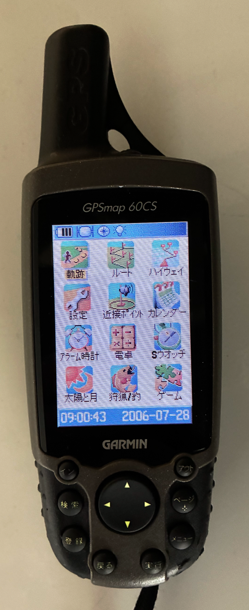
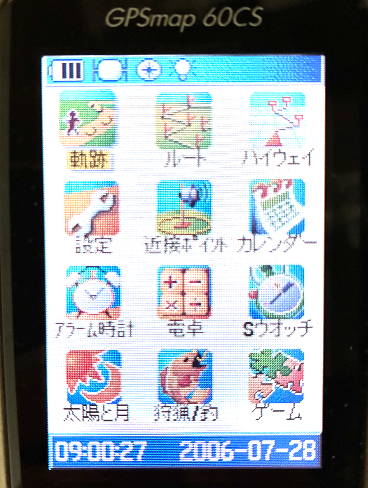

Garmin 60CS，もう20年以上前の機種ですが，久しぶりに引っ張り出してきました．

液晶が乱れていますが，実物はちゃんと表示されています．
保証書を観てみると，平成17年，とあるので，2005年，いまから21年前の製品．
いいよねっと，というところから購入しました．今ではGarminと合併したようです．
ただ，単三電池駆動なので，バッテリーの劣化などがなく安心して使えます．
早速，Windows11にインストール，本体のドライバーは自動認識しなかったのですが，WebからDLできるという記事があり（すいません，リンクを忘れました），無事認識．
本体もGarminから承認しなくてはならないようですが，これもまだ生きていました！
Windowsへは付属の，Mapsource，をインストールしましたが，BaseCamp,という後継ソフトがあるのでこれも入れてみました（Macにも対応していました）
その当時，日本詳細地図，世界地図，メトロマップなどを買っていたのですが，すべてうまくインストールできた感じだったのですが，メトロのみ本体に転送できませんした．．．
電池を入れて，起動させると．．．．無事起動！
GPSも受信！
しかし，日付が．．．2006年になっている．．．
時刻は合っていました．
これは，こちらのサイトによると，
GPS時計の週番号のロールオーバー（WNRO）によるもの。
GPS時計は、週番号＋週内の秒数で表現している。
GPS週番号の最大は1024（約19.7年）であり、それを過ぎるとゼロに戻り日付がリセットされる。
とのこと．．．
本体のバージョンアップで対応できるかと思いましたが，いいよねっと，の製品は一つ前までのバージョン（日本語）のみで，さらに一つ上のバージョンでも対応していないとのこと．．．
まあ，日付があえばいいということで．．

では，実際に街に出て，星を捕捉していきましょう！